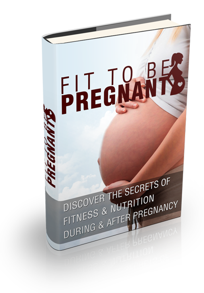

|
Want To Know Exactly How To Eat & Exercise During Pregnancy?
Exposed! Little Known Secrets To Nutrition & Exercise During & After Pregnancy!
Discover How To Give Yourself The Best Shot At A Healthy & Simple, Pain Free Pregnancy!
Date:
Dear
Visitor,
Getting pregnant and childbirth are two of life’s
greatest miracles.
Most women, when asked the question, “What was
the most memorable event in your life?” often cite pregnancy and childbirth.
It’s like a gift from above. There is just
no denying the powerful emotions that pregnancy and childbirth can create in
parents.
However, while pregnancy is glorious and a
rewarding experience, the hard truth is that there is a nutrition and fitness
aspect that cannot be neglected.
There is also a flip side to this shiny
coin. Many women often end up feeling that pregnancy has ruined their shapely
figure and the stretch marks have disfigured them.
They automatically assume that once they’ve
given birth, their bodies will never go back to the shape they originally used
to be. Weight gain, stretch marks, a loss of sex appeal, etc. are negative
consequences that women consider a trade-off to having a bouncy little baby.
Nothing could be further from the truth.
Yes… pregnancy will result in weight gain.
This is only natural and in fact, it’s healthy. However, the weight gain can be
maintained without letting it get out of control.
All weight that is gained during pregnancy
can be lost after pregnancy. After all, it’s just fat and the principles of fat
loss are set in stone regardless if it’s a pregnant woman or an obese man.
It
will take you time to shed the fat… but
there is no hurry. Slow and steady wins the race. With patience,
persistence and this brand new guide, you can definitely lose the
excess fat after childbirth and at the same time, enjoy a healthy and
simple pregnancy.

Fit To Be Pregnant
Discover The Secrets Of Nutrition & Exercise During & After Pregnancy
This
powerful guide will provide you with the vital ingredients you need for
quick and effective results, these are not myths or a so called "miracle product"...this is the truth!
By
grabbing this guide and incorporating it into your life you will be
well on your way to providing the best nutrients for the growing baby
within as well as preparing your body for the monumental task of giving
birth. To top it off learn exactly how to shed the fat after pregnancy
also!
You
can make health promises to yourself all day and night, but
actually sticking to it is the hard part! Within this guide you will discover what
works.

- Pre-Conception...What You Need To Know
- Nutrition & The Best Foods To Eat During Pregnancy
- Must Have Supplements Before & During Pregnancy
- Eating Plan For All 3 Trimesters Of Your Pregnancy
- Baby Has Arrived! Yay...What Now?
- Kick Starting Your Post Pregnancy Exercise Routine To Blast The Fat
- And
Much, Much More..
Why
It's
Important To Invest In This Book Right Now...
Do
NOT let the few dollars you'll invest in this book stop you from making
a decision to change your life. Think instead about how much you'll
LOSE OUT if you don't take advantage of what's on offer here!
You
might be the like
the 95% of women who don't have a clue regarding best foods and
exercise. Don't make that
mistake! Learn and incorporate what is inside this guide and your
pregnancy will be simple, pain free and full of the proper nutrients
Still
not convinced?
For a very limited time, you can grab my fantastic and super-simple
guide
“Fit To Be Pregnant”
for the amazingly low price of just $7.
I
absolutely believe
that you will love this introductory guide to nutrition & exercise during & after pregnancy.
If for any reason you are not fully satisfied I will offer you a full
refund!

That's right. You can test drive this product
for a full 30 days after
your purchase.
Read – Absorb – Apply! Then observe the results. If for
any reason at all, you are not satisfied with this product please
contact me for full refund instructions. Get all the right nutrients
for your baby, the confidence you deserve and the body of your dreams
post pregnancy!

Not
only
can you enjoy the process of learning about nutrition & exercise during pregnancy...
But
because pregnancy is an all year round adventure!
"Grab Your Copy Today, Even If It Is 2 A.M. In The Morning!"
|
Get
Instant Access
Right Now.
Yes!
I want to get Fit To Be Pregnant right now.
I
understand that I will get:
- Pre-Conception...What You Need To Know
- Nutrition & The Best Foods To Eat During Pregnancy
- Must Have Supplements Before & During Pregnancy
- Eating Plan For All 3 Trimesters Of Your Pregnancy
- Baby Has Arrived! Yay...What Now?
- Kick Starting Your Post Pregnancy Exercise Routine To Blast The Fat
- And
Much, Much More..
|
To Your Success,
Your Job Position
Your Business Name
P.S: With a 30
Day Money Back
Guarantee You Have Nothing To Lose...The Risk Is On Me! Grab Your Copy
NOW!
|